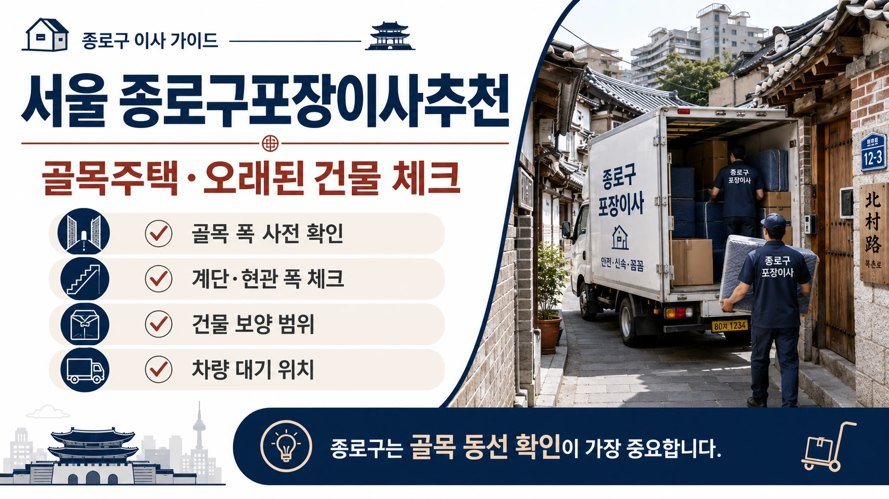
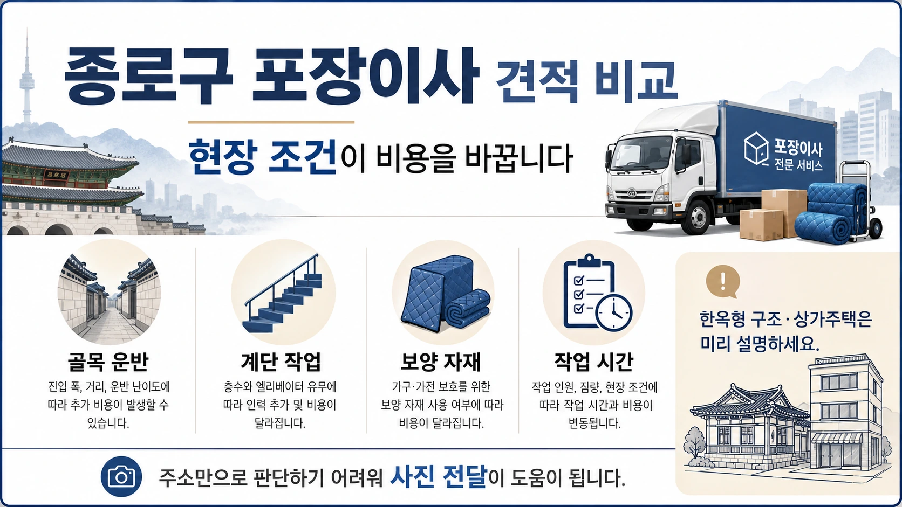
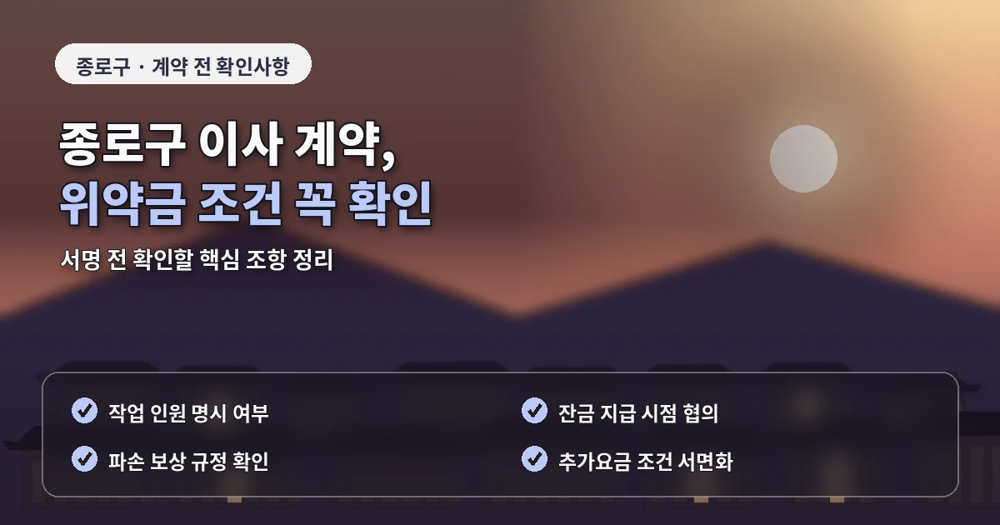

서울 종로구포장이사추천 골목주택 견적 기준
종로구 포장이사는
오래된 주택과 골목길,
한옥형 건물과 상가주택이 함께 있어
견적 전 현장 확인이 특히 중요합니다.
평창동과 부암동은 고지대 주택과 넓은 주거지가 있고,
혜화동과 명륜동은 대학가와 오래된 건물이 함께 있으며,
일부 지역은 차량 진입이 제한될 수 있습니다.

종로구 포장이사 비용은
짐의 양보다 작업 동선과 건물 구조의 영향을 크게 받을 수 있습니다.
견적을 바꾸는 현장 조건
화물차가 집 앞까지 들어갈 수 있는지,
계단 이동이 필요한지,
골목 폭이 충분한지,
한옥이나 오래된 건물의 보호가 필요한지
상담 단계에서 확인해야 합니다.
오래된 주택은
현관 폭이나 계단 구조가 좁은 경우가 있습니다.
대형 냉장고,
세탁기,
장롱,
침대 프레임처럼 큰 물건은
분해가 필요한지,
사다리차를 사용할 수 있는지,
인력 운반이 필요한지 따로 봐야 합니다.
종로구 포장이사 업체추천을 찾을 때는
골목길과 오래된 건물 작업 경험을 확인해야 합니다.

일반 아파트 이사와 달리
벽면이나 문틀 보호,
좁은 계단 이동,
차량 대기 위치 조율이 더 중요할 수 있습니다.
업체 비교 전 살펴볼 기준
견적서에는
작업 인원,
차량 대수,
장거리 운반 여부,
계단 작업,
가구 보양,
추가비 기준,
파손 보상 기준이 명확히 들어가야 합니다.
포장이사 비교견적은
모든 업체에 같은 조건을 전달해야 합니다.
출발지와 도착지의 층수,
건물 구조,
차량 진입 가능 여부,
계단 폭,
짐의 종류,
특수 물품 여부를
동일하게 알려야 견적 차이를 정확히 볼 수 있습니다.
종로구는 상가와 주거가 가까운 곳도 많습니다.
작업 시간대가 상가 영업 시간과 겹치면
차량 대기가 어려워질 수 있고,
짐을 옮기는 동선이 길어질 수 있습니다.
이사 시간을 정할 때는
주변 통행량도 함께 고려해야 합니다.

추가비용을 줄이는 준비 방법
추가비용을 줄이려면
이사 전 짐 정리가 필요합니다.
오래된 책,
사용하지 않는 가구,
폐기할 생활용품을 줄이면
박스 수와 운반 시간이 줄어듭니다.
골목 운반이 필요한 집일수록
짐의 양이 작업 시간에 직접 반영됩니다.
계약 전에는
특수 건물 보호 기준도 확인해야 합니다.
한옥형 구조나 오래된 문틀,
좁은 복도는 작은 충격에도 손상될 수 있으므로
업체가 어떤 방식으로 보양하는지 물어보는 것이 좋습니다.
종로구 포장이사는
가격보다 현장 대응 능력이 중요한 지역입니다.
계약 전에 확인할 세부 항목
비용, 견적, 업체추천을 비교할 때도
골목, 주차, 계단, 건물 보호 조건을 함께 확인해야
이사 당일 문제를 줄일 수 있습니다.
종로구 포장이사에서는
사진 자료가 견적 정확도에 큰 도움이 됩니다.
지도나 주소만으로는 골목 폭과 경사,
차량 정차 가능 위치를 판단하기 어렵습니다.
건물 입구, 계단, 현관, 주차 위치를 사진으로 전달하면
업체가 필요한 인원과 장비를 더 현실적으로 계산할 수 있습니다.
또한 종로구는 문화재 주변이나 오래된 주거지처럼
차량 통행이 제한되는 구간이 있을 수 있습니다.
이 경우 작업 시간이 길어질 수 있으므로
업체와 이동 동선을 미리 협의하는 것이 안전합니다.
작업 전 관리인이나 주변 상가와도 간단히 협의해두면
당일 차량 대기 문제를 줄일 수 있습니다.
종로구 포장이사에서는 건물 보호 범위를 세밀하게 확인해야 합니다.
오래된 주택이나 한옥형 구조는 문틀, 바닥, 계단 모서리가 약한 경우가 있어
일반적인 아파트보다 보양 범위가 더 중요할 수 있습니다.
업체가 어떤 보호 자재를 쓰는지 미리 확인하면 작업 중 손상 위험을 줄일 수 있습니다.
또한 골목이 좁은 지역은 작업 차량 위치를 사전에 정해야 합니다.
차량을 세울 공간이 부족하면 짐을 옮기는 거리가 늘어나고
작업 시간이 길어질 수 있습니다.
주변 상가나 거주자와 간단히 협의해두면 이사 당일 혼선을 줄일 수 있습니다.
종로구 포장이사 견적을 받을 때는 도착지 조건도 자세히 알려야 합니다.
출발지는 골목이 넓어도 도착지가 오래된 건물이라면 작업 방식이 달라질 수 있습니다.
양쪽의 계단, 주차, 현관 폭을 함께 전달하면 실제 비용에 가까운 비교가 가능합니다.
작업 전 주차 협의도 미리 진행하는 것이 좋습니다.
골목 폭과 건물 보호 범위는 계약 전 다시 확인하는 것이 안전합니다.
이 조건은 견적 비교에서 중요한 기준입니다.
꼭 확인해야 합니다.
자주 묻는 질문
A. 차량 진입과 계단 조건이 복잡하면 방문견적이나 사진 확인이 유리합니다.
A. 문틀, 벽면, 계단 손상을 줄이기 위해 보호 범위를 확인해야 합니다.
A. 영업 시간, 차량 대기 위치, 운반 거리, 계단 작업 여부를 확인해야 합니다.